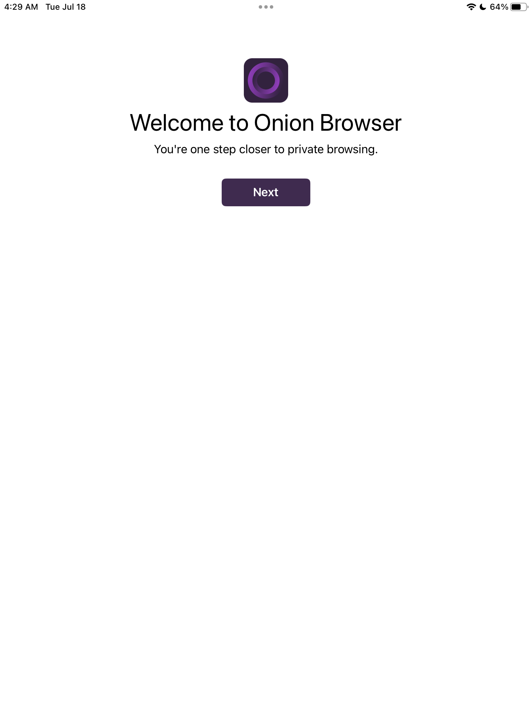
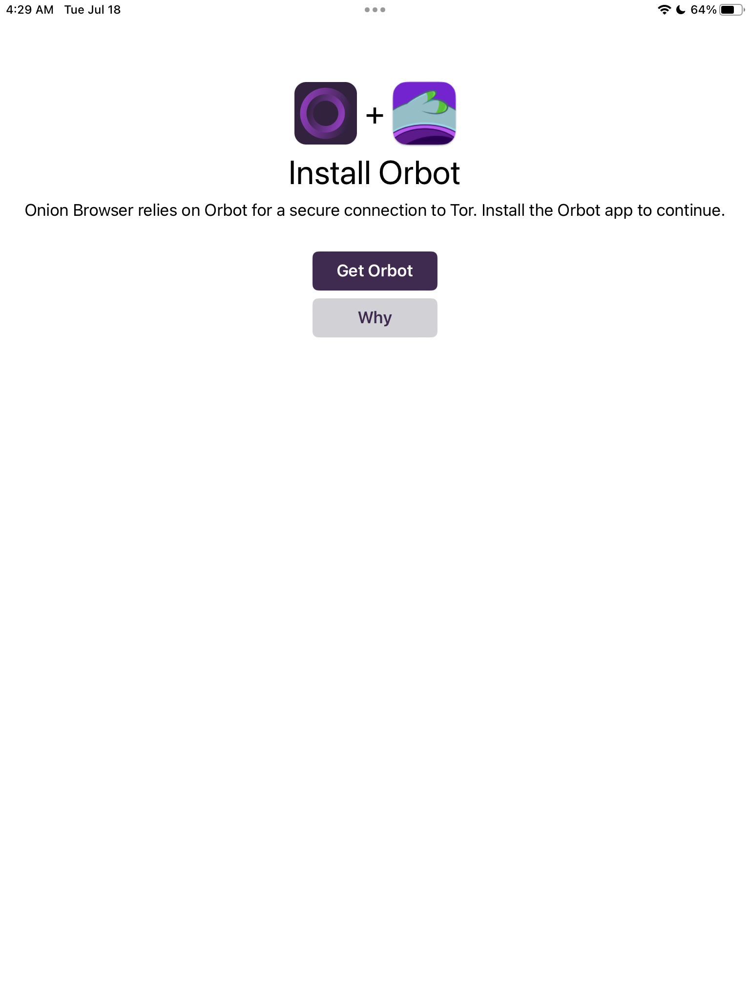
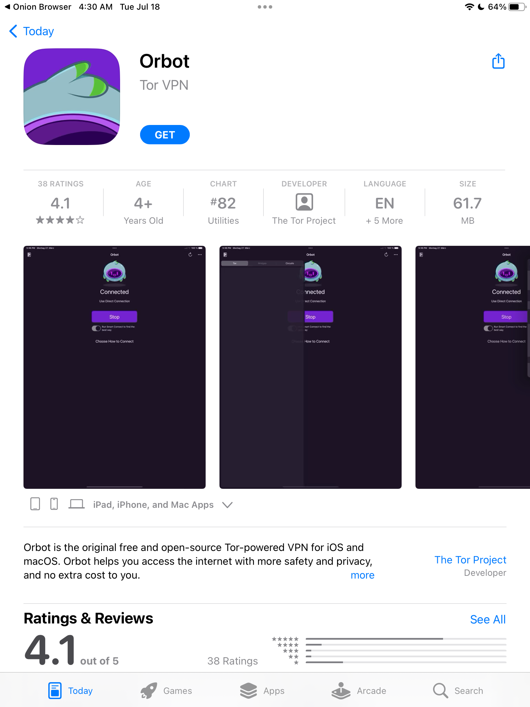
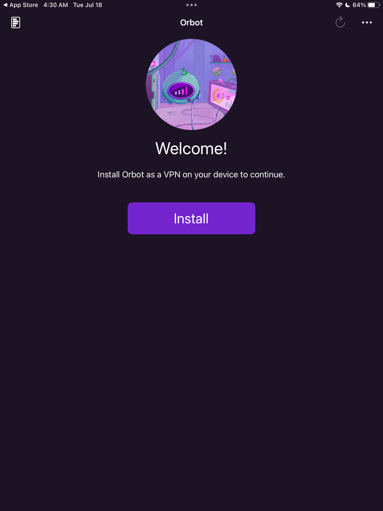
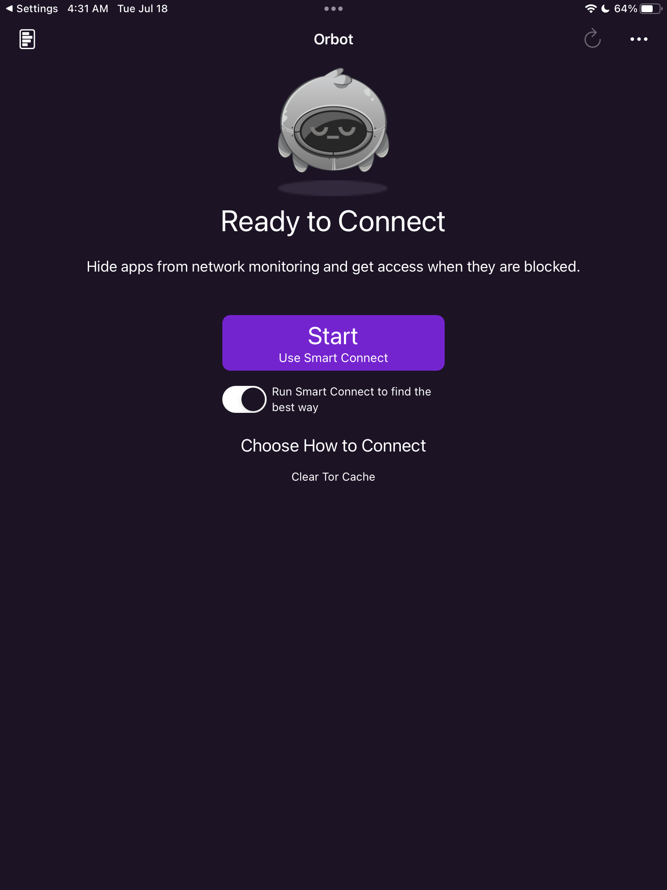
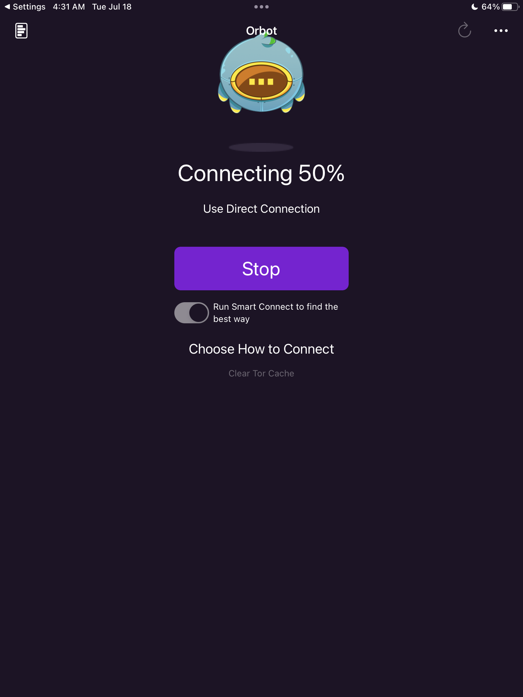
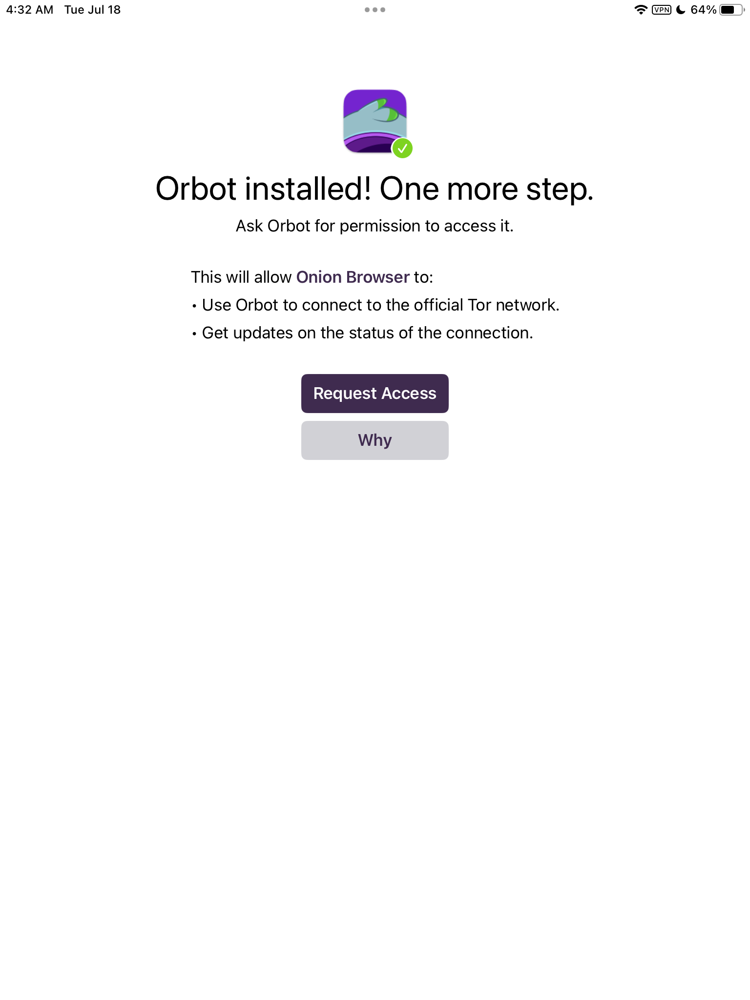
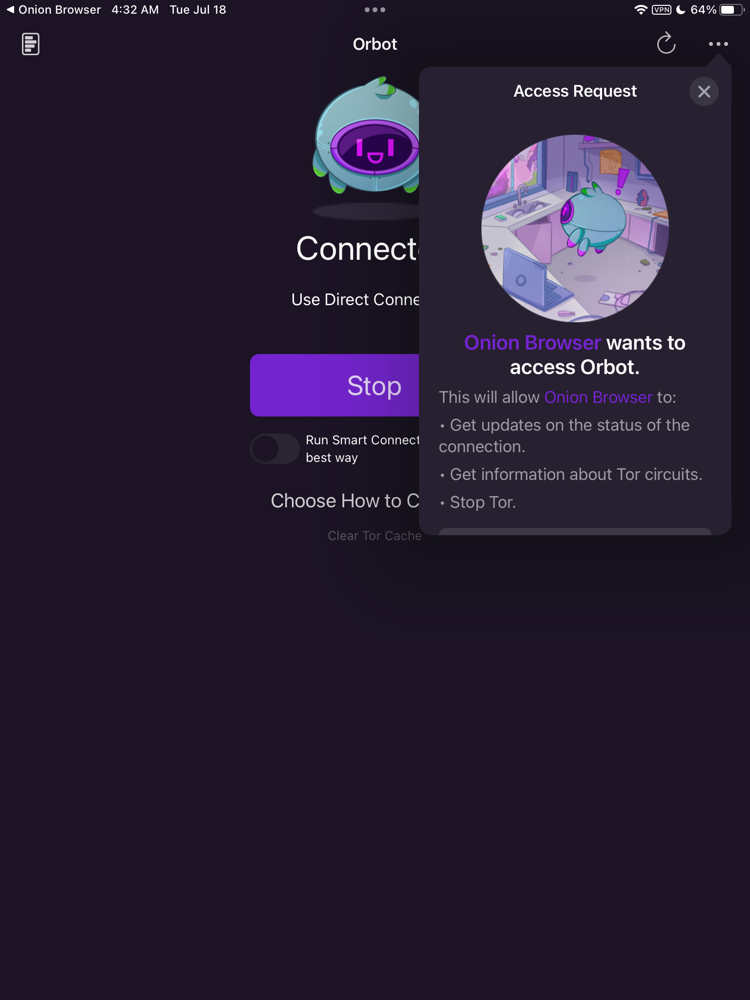
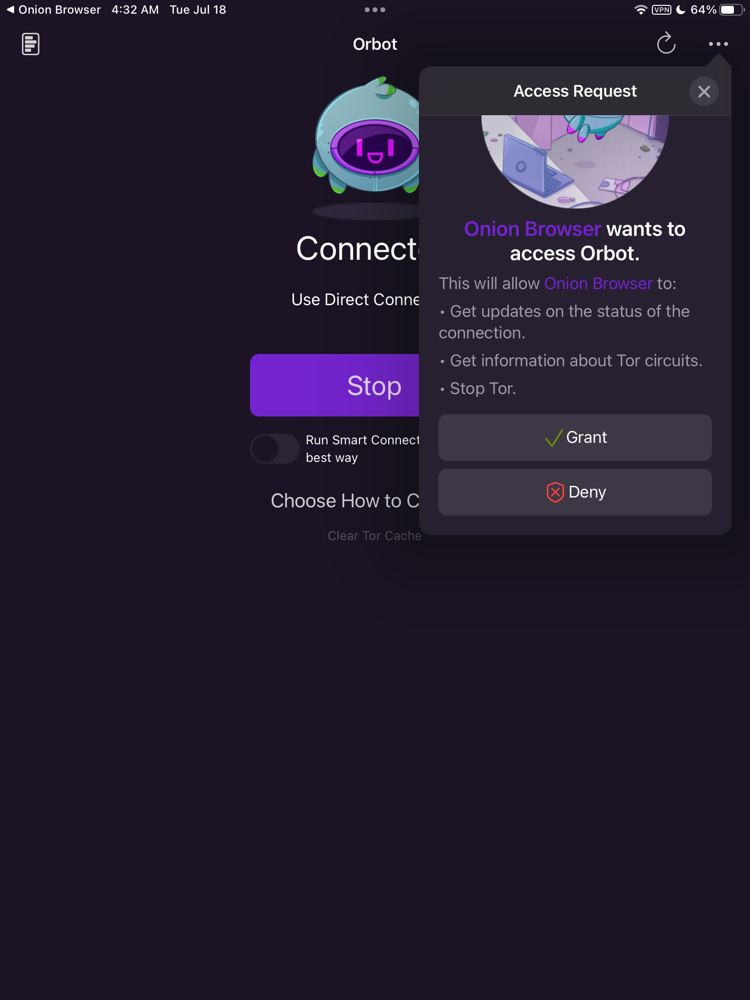
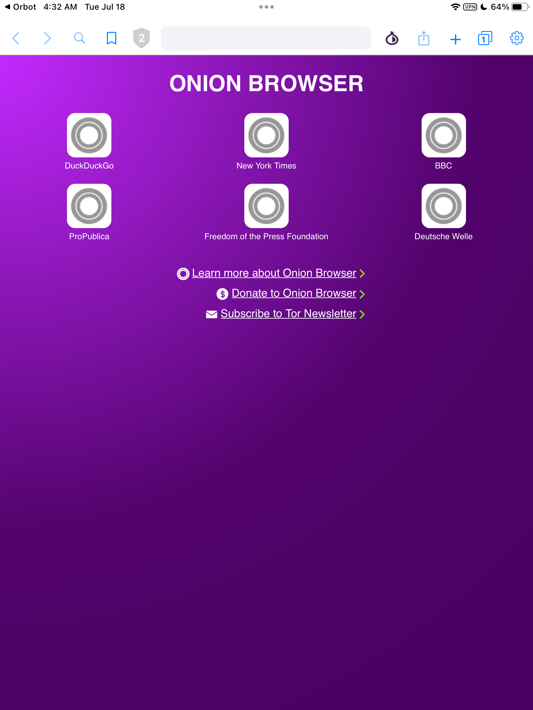

A frequently asked question is how to access the Tor network from iOS (iPhone) or iPadOS (iPad). The standard answer begins:
There is no official iOS Tor (Browser) app that is developed by or maintained by the Tor Project.
The reason for this is that Apple insists that all iOS and iPadOS browsers must use the WebKit rendering engine. The standard Tor Browser on every other platform uses the Gecko rendering engine. Therefore Apple will not allow the standard Tor Browser on its mobile platforms.
Unfortunately the result is a bewildering number of apps on the App Store that claim to be Tor Browsers. The standard answer continues:
If you trust the Tor Project, that does not necessarily mean you should trust arbitrary Tor apps you find in the iOS store. Maybe they work. Maybe they are safe. That being said, the Tor Project has endorsed the open source Onion Browser, which is available on the App Store here.
The recommended app is the one named Onion Browser by Mike Tigas. Link to App Store page:
https://apps.apple.com/us/app/onion-browser/id519296448
Proof of connection with Tor Project:
https://www.torproject.org/about/people
Install the Onion Broswer app from the app store, and launch the Onion Browser for the first time.
You are told you must get Orbot as well, so that the Onion Browser can connect to the Tor network.
You are taken to the App Store to install Orbot.
Orbot prompts you to install it as a VPN
After installation, Orbot prompts you to connect to the Tor network.
Orbot connects and displays the progress of the connection.
Onion Browser needs permission to access Orbot.
Click Grant in the Access Request box.
The access request pops up.
Now that the Onion Browser has access to the Tor network through Orbot, it displays a sceen with some initial links.
For example, you could choose the DW onion site.
And of course you can access any other site you wish.